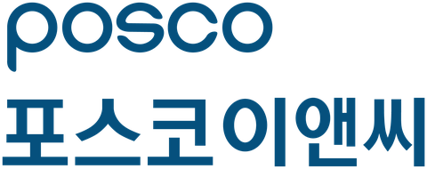

AI 사진분석 물량
Android 앱으로 개발 중 · 이 웹 화면에서는 동작하지 않습니다
AR 실측: 기준 치수 없이 실시간 거리·면적
휴대폰 카메라로 주변을 인식한 뒤 시작점과 끝점을 찍으면 실제 거리가 바로 나옵니다. 기준 치수를 넣지 않아도 됩니다. ARCore의 깊이(Depth) 기능을 쓰므로 설치형 Android 앱에서만 동작하며, 웹 페이지에서는 카메라와 AR 기능을 쓸 수 없습니다.
- 주변 인식카메라를 천천히 좌우로 움직여 바닥·벽을 인식시킵니다.
- 점 지정화면 가운데 조준점을 시작점·끝점에 맞추고 누릅니다. 모서리·직선 스냅이 보조합니다.
- 결과 저장거리·면적과 사진, 측정점, 산출 근거를 휴대폰에 저장하고 CSV로 내보냅니다.
- 권장 거리
- 대상까지 약 0.5~5 m (Google 안내 기준 깊이 정확도가 가장 좋은 범위)
- 대상 기기
- ARCore Depth API 지원 Android 기기
- 1차 개발 범위
- 2점 거리 측정 · 사진 저장 · 강재 개수 검토
- 검증 방법
- 같은 구간을 줄자와 비교해 기기별 오차를 기록
지금 이 화면에서는 ‘사진 물량’에서 기준 치수(기준 길이 또는 바닥 4점)를 잡아 거리를 잴 수 있습니다.
현장 사진을 찍거나 불러오세요
휴대폰에서는 ‘카메라로 촬영’을 누르면 바로 카메라가 열립니다.
기준 객체
선택된 것이 없습니다.
스냅
기준 치수가 필요합니다
길이를 아는 것(스타프·유로폼·벽 폭) 하나를 잡아야 m · m² · m³가 나옵니다.
집계
실제 현장 사진으로 해보기
산출 내역
그림으로 보는 사용법
밀어서 보기 →정확하게 재려면
자세한 설명 (글)
- 잘못 찍었으면 사진 오른쪽 위 ↶(되돌리기)·↷(다시 실행)을 누르세요. 그리던 다각형·선·기준 치수는 ‘그리기 취소’나 Esc로 한 번에 지웁니다. ✎ 수정을 켜면 점·꼭지점·상자 모서리·번호를 끌어 옮기고, 눌러 선택해 지울 수 있습니다. 다각형 변의 가운데 점을 끌면 꼭지점이 늘어나고, AI 범위 모서리를 고치면 그 범위를 다시 셉니다.
- 거리: 첫 점을 찍은 뒤 손가락을 움직이면 확대경 옆에 실시간 길이가 표시됩니다. ‘연속 측정’을 켜면 끝점에서 다음 구간이 바로 이어집니다. 기준 치수 없이 실시간으로 재는 AR 실측은 Android 앱으로 개발 중입니다.
- 면적·부피 ‘자동 면’: 누른 곳에서 경계선(색이 바뀌는 선)까지 면 전체를 잡아 꼭지점 다각형으로 만듭니다. 이미 잡은 면과 겹치는 부분은 빼고 잡으며, 합계는 겹침을 한 번만 셉니다. 경계가 틀리면 ✎ 수정에서 꼭지점을 끌어 고치세요.
- 확대·이동: 사진 위에서 두 손가락을 벌리면 확대, 오므리면 축소, 두 손가락으로 끌면 확대한 사진이 움직입니다. 확대하지 않은 상태에서 두 손가락으로 위아래로 끌면 화면이 스크롤됩니다. 오른쪽 아래 ＋·－·맞춤 버튼도 쓸 수 있고, ‘이동’을 켜면 한 손가락으로 사진을 옮기거나 화면을 내립니다(PC는 Ctrl+휠, +·−·0 키).
- 사진 편집: ‘회전’은 오른쪽으로 90°씩 돌리고, ‘자르기’는 남길 범위만 남깁니다. 원본 해상도에서 다시 만들기 때문에 자르면 작은 대상이 더 크고 선명해집니다. 편집하면 그 전 측정과 기준 치수는 지워집니다.
- 개수는 길이 기준(기준 치수)이 필요 없습니다. 사진 속 같은 부재가 몇 개인지만 셉니다. 기준 치수는 면적 · 토공 · 길이에만 씁니다.
- 면적에 수치가 ‘–’로 나오면 기준 치수가 없는 것입니다. ‘기준 치수’를 잡거나, 집계의 면 항목에서 그 면의 실제 가로·세로 길이를 넣으면 바로 계산됩니다.
- 기준 치수: 면적·토공·길이 화면 위쪽의 ‘기준 치수가 필요합니다’ 카드나 사진 아래 📏 버튼으로 시작합니다. 사진 바로 아래 파란 띠와 단계 목록(① 점 찍기 → ② 실제 치수 → ③ 적용)이 지금 할 일을 알려 줍니다. 면을 먼저 잡았다면 집계의 면 항목에 그 면의 가로·세로 길이를 넣어도 됩니다.
- 확대경은 사진을 가리지 않도록 사진 바로 아래(공간이 없으면 위)에, 손가락과 같은 세로줄에 뜹니다. 가운데 십자가 실제로 찍힐 위치이고, 스냅 종류가 아래에 표시됩니다. 스냅 줄의 ‘확대경’으로 끄고 켭니다.
- 사진 위를 누른 채 움직이면 확대경이 뜨고, 손을 뗀 곳에 점이 찍힙니다. 스냅이 걸리면 꼭지점·끝선·90°·수평·수직이 표시됩니다.
- 개수 ‘부재 골라 세기’ (권장): ① 셀 부재 하나를 상자로 꼭 맞게 감싸 개수 단위(기준 부재)로 정하고 → ② 부재가 모인 범위를 감싸거나 ‘사진 전체에서 세기’ → ③ 결과를 확인해 ‘추가 · 제외’로 고칩니다. 기준 부재와 크기 · 색 · 모양이 닮은 것만 셉니다. 녹 · 그늘처럼 색이 다른 것이 빠지면 ‘기준 부재 하나 더’로 그런 부재를 하나 더 감싸세요. 실제 철근 다발 사진 50장 시험에서 개수 오차는 평균 약 10%였습니다.
- 개수 ‘자동 인식’: 범위를 감싸거나 ‘사진 전체에서 찾기’를 누르면 반복되는 부재 단위를 크기별로 최대 3가지(부재 A · B · C) 찾아, 가장 뚜렷한 단위를 먼저 셉니다. 후보를 눌러 다른 단위를 켜고 끕니다. 점선 ‘기준(자동)’이 낱개 하나로 본 크기입니다. 기준 부재를 직접 고를 때보다 덜 정확하므로(시험 오차 약 20%), 단위가 맞지 않으면 ‘부재 골라 세기’를 쓰세요. AI 비전을 쓸 수 있는 설치형 앱에서는 AI가 범위 안을 셉니다.
- 개수 ‘비슷한 것’: 셀 대상 하나를 상자로 1~3개 감싸면 모양과 색이 닮은 것을 사진 전체에서 찾아 번호를 붙입니다. AI를 쓸 수 없는 화면에서도 됩니다. 가까운 것과 먼 것을 하나씩 예시로 주면 원근으로 크기가 달라도 잘 찾습니다. 화면에서 몇 px밖에 안 되는 먼 대상은 놓치기 쉬우니 가까이서 찍으세요.
- 기준 치수 ‘기준 길이’는 정면 사진용입니다. 측정면과 같은 면에 놓인 물체(스타프, 유로폼)를 기준으로 삼으세요.
- 기준 치수 ‘바닥 4점’은 비스듬히 찍은 바닥용입니다. 크기를 아는 바닥 직사각형의 네 모서리를 찍으면 원근을 펴서 잽니다. 기준은 잴 범위를 거의 덮을 만큼 커야 하며, 터파기는 측량 핀(말뚝) 4개로 10~20 m 사각형을 잡고 찍으세요. 결과 옆 ‘기준점 1px 오차 시 ±%’가 민감도입니다.
- 토공 평면: 각주공식 V = h/6 × (A상 + 4A중 + A바닥). 깊이를 쉼표로 여러 개 넣으면 평균을 씁니다. 단면: 단면적 × 연장.
- 흐트러진 토량 = 자연상태 × L, 다짐 = 자연상태 × C. 토질별 L·C는 표준품셈 범위의 대표값이니 현장 시험값으로 고쳐 쓰세요. 덤프 1대 적재량 q = 톤수 ÷ 단위중량 × L.
- 샘플의 ‘굴착 구역 토공량’은 실제 사진에 가정한 바닥 치수를 넣은 시연입니다. 수치는 실제 물량이 아닙니다.